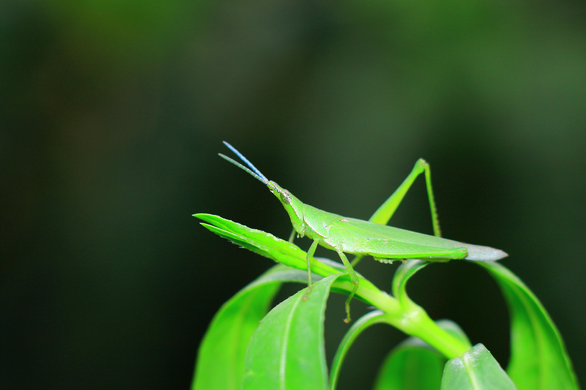
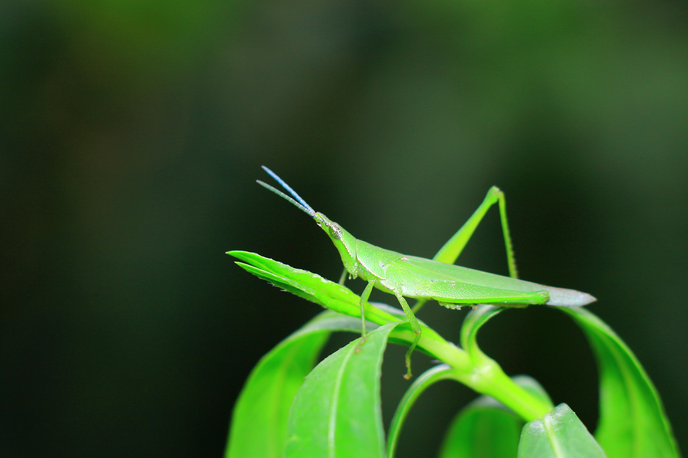

Juan Pérez es un estudiante del Grado en Biología en la Universidad de Vic (UVIC). A lo largo de su carrera académica, ha desarrollado una profunda conexión con la naturaleza, lo que le ha llevado a explorar su belleza y diversidad a través de la fotografía. Recientemente, Juan presentó una serie de imágenes en un concurso interno de la universidad, donde su objetivo era capturar la esencia de los ecosistemas locales y resaltar la importancia de la conservación del medio ambiente. Cada fotografía refleja su pasión por la naturaleza y su deseo de inspirar a otros a apreciar y proteger nuestro entorno natural. Con estas imágenes, Juan espera transmitir un mensaje claro: la belleza de la naturaleza es un tesoro que debemos cuidar y preservar para las futuras generaciones.


 
